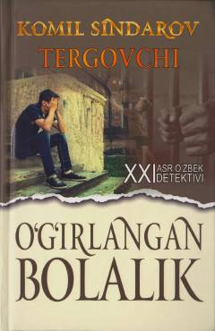

OBMas'ul xodimning sirli yo'qolishi va uni qidirishga bag'ishlangan detektiv qissa.
Mazkur detektiv qissada prokuratura bo'lim boshlig'ining sirli ravishda yo'qolishi va uni qidirish jarayonlari hikoya qilinadi. Asarda tergovchilarning mashaqqatli mehnati, qat'iyati hamda adolat yo'lidagi kurashlari real voqelikka asoslangan holda ochib berilgan.